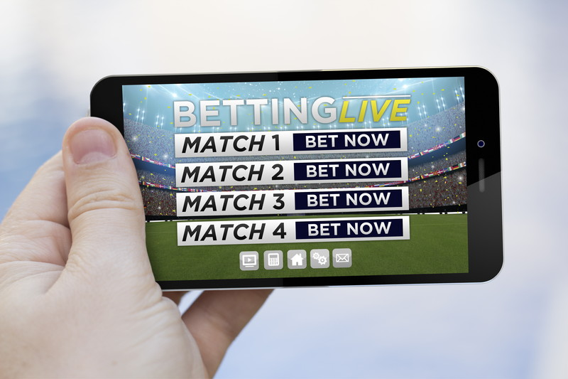

ブックメーカーの基本的なやり方

日本で賭けというと競馬などの公営ギャンブルをイメージする人が多いですが、ヨーロッパだとブックメーカーが非常に有名です。ブックメーカーは、イギリスが発祥の地で、インターネットの発展に伴い大手の老舗ブックメーカーはオンライン化して世界中に普及しています。サッカーのプレミアリーグなど、人気がある試合を中継で見ることができるサービスがあるため、日本でも登録している人は少なくありません。
●オッズが高いブックメーカー
ライブ中継を見ながら賭けをすることもできます。初心者の場合、初めに基本的な知識を頭に入れる必要がありますが、ある程度覚えたら、後は実践するうちに身につきます。登録してBETするには、資金を入金する必要があり、大手のサイトでは出金のために本人確認が必要となることが多いです。
パスポートや免許証など、身分証明書となる書類をアップロードするため、事前に書類を用意しておいた方が手続きがスムーズに進みます。最近は、利用者を増やすために日本語対応のサイトも増えています。メールサポートやチャットサポートまで日本語に対応している会社があるので、英語が苦手な人にとっては便利です。登録は無料で、ボーナスなど様々な特典を用意しているブックメーカーも多いです。
ブックメーカー やり方の種類
知識として、ブックメーカーの賭けにはどんな種類のものがあるのか知っておいてもよいでしょう。最も多いものは各種スポーツです。ブックメーカーは欧米、とくにヨーロッパが主体ですから、スポーツもヨーロッパで人気のあるスポーツが中心となっています。サッカーなどはその代表でしょう。日本人であっても欧州のサッカーリーグに興味を持っている人は多いでしょうが、本場ヨーロッパとなるとなおのことです。
他のスポーツしては例えば野球、アメリカンフットボールなどがありますが、もちろんこれだけには留まりません。およそそれなりに人気のあるスポーツであれば何でも対象になりますし、必ずしもそのスポーツが欧米で開催されている必要もありません。それこそ日本のプロ野球やJリーグ、あるいは国技である大相撲などが対象になっていることもあります。
そして、賭けの対象は別にスポーツに留まるものでもありません。その性質から見て、それなりに多くの人が興味関心を持つようなものであり、結果が容易には予想がつかず、しかもどの結果が出た場合にはその結果が誰の目にも明らかであり、しかも結果の出る時期が少なくともある程度は決まっていて早いというような事物であればどんな種類のものでもブックメーカーの賭けの対象になり得ます。

スポーツ観戦が趣味の人も楽しめるブックメーカー
スポーツ観戦が趣味なら、おすすめはブックメーカーです。ブックメーカーでは、スポーツの試合やレースにお金を賭けることができます。お金を賭ければ、いつも趣味として楽しんでいる試合やレース観戦の楽しさを一段階上に引き上げてくれます。
勝敗やスコアによって配当金を受け取れる可能性があるので、テレビ前での応援も白熱することでしょう。しかしスポーツの試合やレースにお金を賭けるのは、始めは心理的なハードルが高いかもしれません。また、海外の会社が運営しているので、やり方に不安があるかもしれません。

ですがブックメーカーの楽しみ方は、お金を賭けるだけではありません。操作や賭け方などのやり方を詳しく覚える必要もないでしょう。
世界中の様々なスポーツの試合やレースを、ライブ中継で配信しているのも魅力です。日本国内のテレビは世界的に有名な大会なら生中継していますが、それ以外の試合やレースはほとんど無料で見ることができません。
例えば日本でも人気の海外サッカーリーグの試合を見たいときには、有料チャンネルや配信サービスを契約する必要があります。しかしブックメーカーでは、様々な競技の試合やレースをライブ中継で配信中です。会員登録すればライブ中継は無料で視聴できるので、ファンにとってはたまらない魅力です。
そのためブックメーカーはお金儲けの投資として利用する人の他に、試合観戦が趣味で登録してライブ中継を楽しむ人も多数います。
登録してみたいけどお金を賭けること、やり方に不安を覚える事はありません。
ブックメーカーで効率的なベットは両賭けを利用

ブックメーカーは様々なスポーツの試合でも賭けをすることができる非常に戦略的なゲームです。そのためそのチームの戦力やこれまでの対戦成績などを分析して賭けをすることができるので、勝率も高まる点にポイントがあります。
ただしそれぞれの戦略や対戦成績によりオッズが変わるので、勝つ確率の高いチームの場合には利益が少なくなってしまう傾向があるのです。
そのためあえてオッズの高いチームに賭けると勝った場合の利益は大きくなりますが、負ける確率が高くなる可能性も高まることになります。この場合勝ったときには大きな金額を設けることができますが、負けたときには何も残らないので非常に悔しい思いをすることが少なくありません。
ブックメーカーではこのような場両賭けと呼ばれる方法を行うのが一般的です。両賭けは両方のチームにそれぞれベットすることで、オッズの大きなチームがあった場合には高い利益を得ることができますが、万が一このチームが負けた場合でも相手のチームにベットしておくことでその分の利益を上げることができるのです。
それぞれのオッズを考慮し掛け金を変えることがポイントで、最悪でも損をしないようにしておくと非常に効果的です。一般的なゲームでは両方のチームに賭ける事は資金が必要になるのであまり行われませんが、ブックメーカーでは少ない資金で楽しむことができるメリットもあるため、できるだけリスクを減らすようにこの方法が行われることが多いのです。
複数サイトを比較するのも戦略の1つ
ブックメーカーを利用する際、単に一つのサイトだけを利用するのではなく、複数のサイトを比較して最適な条件を見極めることが、長期的な利益を最大化するための重要な戦略の一つです。それぞれのブックメーカーが提供するオッズやプロモーション、サービスには違いがあり、これらを適切に比較することで、より有利なベット環境を整えることができます。
重要なポイントは「オッズの比較」です。同じ試合やイベントに対しても、ブックメーカーごとにオッズの設定が異なります。例えば、あるサイトではチームAの勝利に対して1.90倍のオッズが提示されているのに対し、別のサイトでは2.00倍のオッズが提示されている場合、後者で賭けた方が同じ勝率でも高いリターンを得ることができます。
このような小さな差が積み重なることで、長期的な利益に大きな違いを生むのです。
ブックメーカーごとに異なるプロモーションやボーナスを活用することも、利益を最大化するための重要な要素となります。初回入金ボーナスやフリーベット、キャッシュバックなどのキャンペーンは、それぞれのサイトによって異なるため、これらを比較して最も魅力的なオファーを選択することが望ましいでしょう。
新規登録時に受け取れるボーナスは資金効率を高めるために有効であり、複数のブックメーカーにアカウントを作成することで、より多くの特典を受けることが可能です。
また、ライブベッティングにおいてもサイトごとの違いが大きく影響します。試合の進行に応じてリアルタイムで賭けるライブベッティングは、オッズの変動が激しく、素早い判断が求められます。
そのため、使いやすいインターフェースを提供しているサイトや、迅速なオッズ更新が行われるサイトを選ぶことが、成功を左右します。ライブストリーミング機能を提供しているブックメーカーもあり、リアルタイムで試合を観戦しながら適切なタイミングでベットを行うことが可能です。
出金のスムーズさや対応している決済方法も考慮すべきポイントです。一部のブックメーカーでは出金手続きに時間がかかる場合があるため、迅速な出金が可能なサイトを選ぶことで、資金管理の効率を高めることができます。
クレジットカード、電子ウォレット、仮想通貨など、対応している決済方法もサイトごとに異なるため、自分にとって利便性の高い決済手段を提供しているサイトを選ぶことが重要です。
このように、複数のブックメーカーを比較することで、より良いオッズ、魅力的なプロモーション、使いやすいライブベッティング環境、そしてスムーズな出金手続きなど、多くのメリットを受けることができます。一つのサイトにこだわるのではなく、それぞれのサイトの強みを活かしながら最適な環境でベットを行うことが、賢いブックメーカーの利用方法と言えるでしょう。